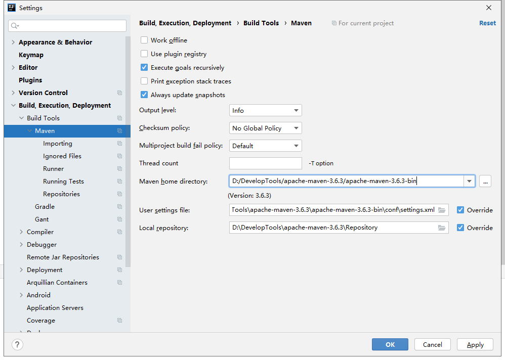
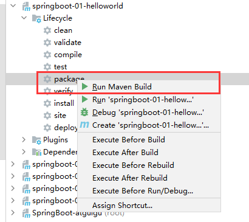
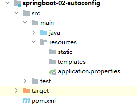
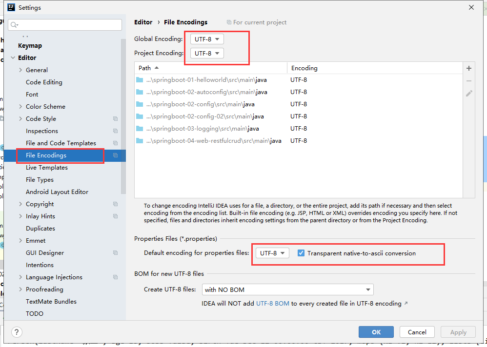
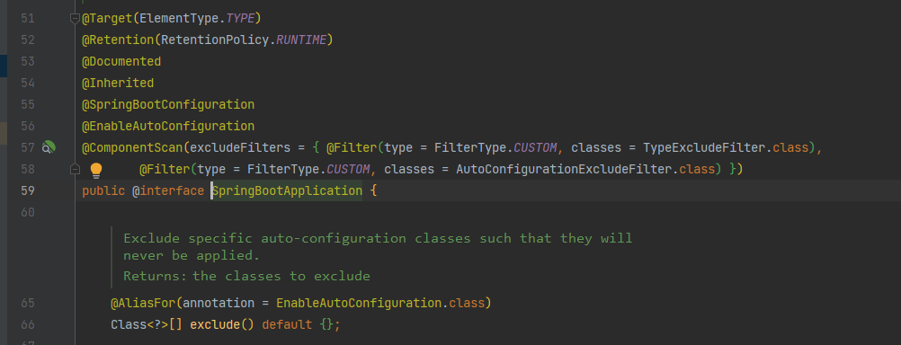
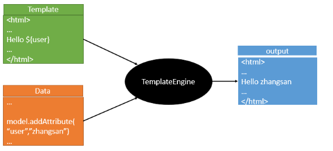
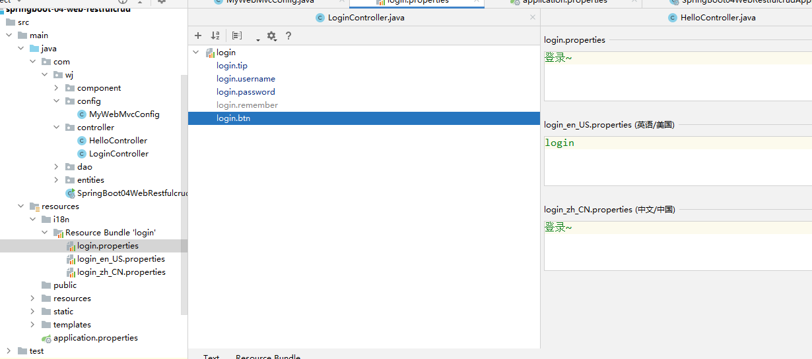
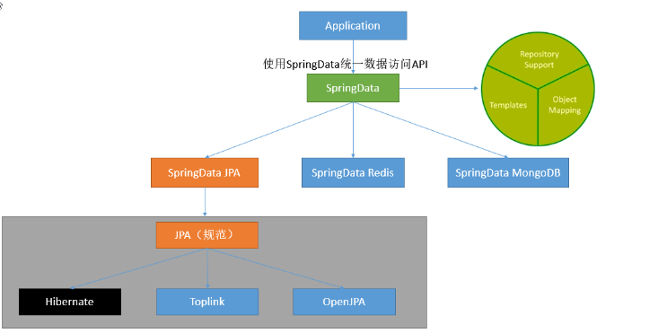

一、Spring Boot 入门 1、SpringBoot 简介
简化 Spring 应用开发的一个框架
整个 Spring 技术栈的大整合
J2EE 开发的一站式解决方案
2、微服务 提出者：2014，martin fowler
微服务：是一个架构服务（服务微型化）
一个 应用应该是一组小型服务，可以通过 HTTP 的方式进行互通；
单体应用（传统应用）：All in one
微服务：每个功能元素最终都是一个可独立替换和独立升级的软件单元；详细参照微服务文档
3、环境准备 jdk1.8+IDEA+maven3.x
1、maven 设置 给maven 的settings.xml配置文件的profiles标签添加（指定maven 使用jdk 1.8 进行编译）
1 2 3 4 5 6 7 8 9 10 11 12 <profile > <id > jdk-1.8</id > <activation > <activeByDefault > true</activeByDefault > <jdk > 1.8</jdk > </activation > <properties > <maven.compiler.source > 1.8</maven.compiler.source > <maven.compiler.target > 1.8</maven.compiler.target > <maven.compiler.compilerVersion > 1.8</maven.compiler.compilerVersion > </properties > </profile >
2、IDEA设置

4、SpringBoot helloworld 功能需求:
浏览器发送hello请求，服务器接受请求并处理，响应Hello World字符串；
1、创建 maven工程 2、导入 springboot 相关的依赖 1 2 3 4 5 6 7 8 9 10 11 12 <parent > <groupId > org.springframework.boot</groupId > <artifactId > spring-boot-starter-parent</artifactId > <version > 2.3.4.RELEASE</version > <relativePath /> </parent > <dependencies > <dependency > <groupId > org.springframework.boot</groupId > <artifactId > spring-boot-starter-web</artifactId > </dependency > </dependencies >
3、编写一个主程序 1 2 3 4 5 6 7 8 9 10 11 12 package com.wj;import org.springframework.boot.SpringApplication;import org.springframework.boot.autoconfigure.SpringBootApplication;@SpringBootApplication public class Springboot01HelloworldApplication { public static void main (String[] args) { SpringApplication.run(Springboot01HelloworldApplication.class, args); } }
4、编写相关的 controller 1 2 3 4 5 6 7 8 9 10 11 12 13 package com.wj.controller;import org.springframework.stereotype.Controller;import org.springframework.web.bind.annotation.RequestMapping;import org.springframework.web.bind.annotation.RestController;@RestController public class HelloController { @RequestMapping("/hello") public void hello () { System.out.println("hello" ); } }
5、运行主程序测试 6、简化部署 1 2 3 4 5 6 7 8 9 <build > <plugins > <plugin > <groupId > org.springframework.boot</groupId > <artifactId > spring-boot-maven-plugin</artifactId > </plugin > </plugins > </build >

将这个应用打成jar包，直接使用 java -jar 的命令执行
5、Hello World 探究 1、pom 文件 1、父项目 1 2 3 4 5 6 7 8 9 10 11 12 13 14 <parent > <groupId > org.springframework.boot</groupId > <artifactId > spring-boot-starter-parent</artifactId > <version > 2.3.4.RELEASE</version > <relativePath /> </parent > <parent > <groupId > org.springframework.boot</groupId > <artifactId > spring-boot-dependencies</artifactId > <version > 2.3.4.RELEASE</version > </parent >
2、启动器 1 2 3 4 <dependency > <groupId > org.springframework.boot</groupId > <artifactId > spring-boot-starter-web</artifactId > </dependency >
spring-boot-starter -web ：
spring-boot-starter：spring-boot场景启动器；帮我们导入了web模块正常运行所依赖的组件；
Spring Boot将所有的功能场景都抽取出来，做成一个个的starters（启动器），只需要在项目里面引入这些starter相关场景的所有依赖都会导入进来。要用什么功能就导入什么场景的启动器
2、主程序类，主入口类 1 2 3 4 5 6 7 8 9 10 @SpringBootApplication public class HelloWorldMainApplication { public static void main (String[] args) { SpringApplication.run(HelloWorldMainApplication.class,args); } }
@SpringBootApplication 注解的作用:
Spring Boot应用标注在某个类上说明这个类是SpringBoot的主配置类，SpringBoot就应该运行这个类的main方法来启动SpringBoot应用；
1 2 3 4 5 6 7 8 @Target(ElementType.TYPE) @Retention(RetentionPolicy.RUNTIME) @Documented @Inherited @SpringBootConfiguration @EnableAutoConfiguration @ComponentScan(excludeFilters = { @Filter(type = FilterType.CUSTOM, classes = TypeExcludeFilter.class), @Filter(type = FilterType.CUSTOM, classes = AutoConfigurationExcludeFilter.class) })
@SpringBootConfiguration :Spring Boot的配置类；
标注在某个类上，表示这是一个Spring Boot的配置类；
@Configuration :配置类上来标注这个注解；
配置类 —– 配置文件；配置类也是容器中的一个组件；@Component
@EnableAutoConfiguration ：开启自动配置功能；
以前我们需要配置的东西，Spring Boot帮我们自动配置；@EnableAutoConfiguration 告诉SpringBoot开启自动配置功能；这样自动配置才能生效；
1 2 @AutoConfigurationPackage @Import(AutoConfigurationImportSelector.class)
@AutoConfigurationPackage ：自动配置包
@Import(AutoConfigurationImportSelector.class)
给容器中导入组件？
EnableAutoConfigurationImportSelector ：导入哪些组件的选择器；
将所有需要导入的组件以全类名的方式返回；这些组件就会被添加到容器中；会给容器中导入非常多的自动配置类（xxxAutoConfiguration）；就是给容器中导入这个场景需要的所有组件，并配置好这些组件；
有了自动配置类，免去了我们手动编写配置注入功能组件等的工作； SpringFactoriesLoader.loadFactoryNames(EnableAutoConfiguration.class,classLoader)；
Spring Boot在启动的时候从类路径下的META-INF/spring.factories中获取EnableAutoConfiguration指定的值，将这些值作为自动配置类导入到容器中，自动配置类就生效，帮我们进行自动配置工作；以前我们需要自己配置的东西，自动配置类都帮我们；
1 public static final String FACTORIES_RESOURCE_LOCATION = "META-INF/spring.factories" ;
J2EE的整体整合解决方案和自动配置都在spring-boot-autoconfigure-1.5.9.RELEASE.jar；
6、使用Spring Initializer快速创建Spring Boot项目 1、IDEA：使用 Spring Initializer快速创建项目 IDE都支持使用Spring的项目创建向导快速创建一个Spring Boot项目；
选择我们需要的模块；向导会联网创建Spring Boot项目；
默认生成的Spring Boot项目；
主程序已经生成好了，我们只需要我们自己的逻辑
resources文件夹中目录结构
static：保存所有的静态资源； js css images；
templates：保存所有的模板页面；（Spring Boot默认jar包使用嵌入式的Tomcat，默认不支持JSP页面）；可以使用模板引擎（freemarker、thymeleaf）；
application.properties：Spring Boot应用的配置文件；可以修改一些默认设置；

2、STS使用 Spring Starter Project快速创建项目 该方法是 eclipse 创建springBoot 项目的方式
二、配置文件 1、配置文件 SpringBoot使用一个全局的配置文件，配置文件名是固定的；
application.properties
application.yml
配置文件的作用：修改SpringBoot自动配置的默认值；SpringBoot在底层都给我们自动配置好；
2、YAML语法： 1、基本语法 k:(空格)v：表示一对键值对（空格必须有）；
以空格 的缩进来控制层级关系；只要是左对齐的一列数据，都是同一个层级的
2、值的写法 字面量：普通的值（数字，字符串，布尔） k: v：字面直接来写；
字符串默认不用加上单引号或者双引号；
“”：双引号；不会转义字符串里面的特殊字符；特殊字符会作为本身想表示的意思
name: “zhangsan \n lisi”：输出；zhangsan 换行 lisi
‘’：单引号；会转义特殊字符，特殊字符最终只是一个普通的字符串数据
name: ‘zhangsan \n lisi’：输出；zhangsan \n lisi
对象、Map（属性和值）（键值对）： k: v：在下一行来写对象的属性和值的关系；注意缩进
对象还是k: v的方式
1 2 3 friends: lastName: zhangsan age: 20
行内写法：
1 friends: {lastName: zhangsan ,age: 18 }
数组（List、Set）： 用- 值表示数组中的一个元素
1 2 3 4 pets: - cat - dog - pig
行内写法
3、配置文件值注入 配置文件
1 2 3 4 5 6 7 8 9 10 11 12 13 14 person: last-name: 张三 age: 18 boss: false birth: 2017 /12/12 maps: {k1: v1 ,k2: 12 } lists: - lisi - zhaoliu dog: name: 小狗 age: 12 single: 'zhangsan \n lisi' dou: "zhangsan \n lisi"
javaBean：
1 2 3 4 5 6 7 8 9 10 11 12 13 14 15 16 17 18 19 20 21 22 23 24 25 26 27 28 29 30 31 32 33 34 35 36 37 38 39 40 41 42 43 44 45 46 47 48 49 50 51 52 53 54 55 56 57 58 59 60 61 62 63 64 65 66 67 68 69 70 71 72 73 74 75 76 77 78 79 80 81 82 83 84 85 86 87 88 89 90 91 92 93 94 95 96 97 98 99 100 101 102 103 104 105 106 107 108 109 110 111 112 113 114 115 116 117 118 119 120 121 122 123 124 125 126 127 package com.wj.bean;import org.springframework.boot.context.properties.ConfigurationProperties;import org.springframework.context.annotation.PropertySource;import org.springframework.stereotype.Component;import org.springframework.validation.annotation.Validated;import java.util.Arrays;import java.util.Date;import java.util.List;import java.util.Map;@Component @ConfigurationProperties(prefix = "person") public class Person { private String lastName; private Integer age; private Boolean boss; private Date birth; private Map<String, Object> maps; private List<Object> lists; private Dog dog; private String single; private String dou; public String getLastName () { return lastName; } public void setLastName (String lastName) { this .lastName = lastName; } public Integer getAge () { return age; } public void setAge (Integer age) { this .age = age; } public Boolean getBoss () { return boss; } public void setBoss (Boolean boss) { this .boss = boss; } public Date getBirth () { return birth; } public void setBirth (Date birth) { this .birth = birth; } public Map<String, Object> getMaps () { return maps; } public void setMaps (Map<String, Object> maps) { this .maps = maps; } public List<Object> getLists () { return lists; } public void setLists (List<Object> lists) { this .lists = lists; } public Dog getDog () { return dog; } public void setDog (Dog dog) { this .dog = dog; } public String getSingle () { return single; } public void setSingle (String single) { this .single = single; } public String getDou () { return dou; } public void setDou (String dou) { this .dou = dou; } @Override public String toString () { return "Person{" + "lastName='" + lastName + '\'' + ", age=" + age + ", boss=" + boss + ", birth=" + birth + ", maps=" + maps + ", lists=" + lists + ", dog=" + dog + ", single='" + single + '\'' + ", dou='" + dou + '\'' + '}' ; } }
我们可以导入配置文件处理器，以后编写配置就有提示了
1 2 3 4 5 6 <dependency > <groupId > org.springframework.boot</groupId > <artifactId > spring-boot-configuration-processor</artifactId > <optional > true</optional > </dependency >
1、properties配置文件在idea中默认utf-8可能会乱码 
2、@Value获取值和@ConfigurationProperties获取值比较
@ConfigurationProperties
@Value
功能
批量注入配置文件中的属性
一个个指定
松散绑定（松散语法）
支持
不支持
SpEL
不支持
支持
JSR303数据校验
支持
不支持
复杂类型封装
支持
不支持
1 2 @ImportResource(locations = {"classpath:beans.xml"}) 导入Spring的配置文件让其生效
@PropertySource ：加载指定的配置文件；配置文件无论是 yml 还是 properties 他们都能获取到值；
properties:
1 2 @Value("${person.last-name}") private String lastName;
3、配置文件注入值数据校验 @Email注解报红 是因为新版本需要validation启动器
解决方法：在pom.xml 加入下面依赖：
1 2 3 4 <dependency > <groupId > org.springframework.boot</groupId > <artifactId > spring-boot-starter-validation</artifactId > </dependency >
1 2 3 4 5 6 7 8 9 10 11 12 13 14 15 16 17 @Component @ConfigurationProperties(prefix = "person") @Validated public class Person { @Email private String lastName; private Integer age; private Boolean boss; private Date birth; private Map<String,Object> maps; private List<Object> lists; private Dog dog;
4、@PropertySource&@ImportResource&@Bean
@PropertySource : 加载指定的配置文件；
1 @PropertySource(value = {"classpath:person.properties"})
@ImportResource ：导入Spring的配置文件，让配置文件里面的内容生效；
Spring Boot里面没有Spring的配置文件，我们自己编写的配置文件，也不能自动识别；
想让Spring的配置文件生效，加载进来；@ImportResource 标注在一个配置类上
1 2 @ImportResource(locations = {"classpath:beans.xml"}) 导入Spring的配置文件让其生效
不来编写Spring的配置文件
SpringBoot推荐给容器中添加组件的方式；推荐使用全注解的方式
1、配置类**@Configuration**——>Spring配置文件
2、使用**@Bean**给容器中添加组件
1 2 3 4 5 6 7 8 9 10 11 12 13 14 15 16 @Configuration public class MyAppConfig { @Bean public HelloService helloService02 () { System.out.println("配置类@Bean给容器中添加组件了..." ); return new HelloService (); } }
4、配置文件占位符 1、随机数 1 2 ${random.value}、${random.int}、${random.long} ${random.int(10)}、${random.int[1024,65536]}
2、占位符获取之前配置的值，如果没有可以是用:指定默认值 1 2 3 4 5 6 7 8 9 person.last-name =张三${random.uuid} person.age =${random.int} person.birth =2017/12/15 person.boss =false person.maps.k1 =v1 person.maps.k2 =14 person.lists =a,b,c person.dog.name =${person.hello:hello}_dog person.dog.age =15
5、Profile 1、多Profile文件 我们在主配置文件编写的时候，文件名可以是 application-{profile}.properties/yml
默认使用application.properties的配置；
2、yml支持多文档块方式 1 2 3 4 5 6 7 8 9 10 11 12 13 14 15 16 17 18 19 server: port: 8081 spring: profiles: active: prod 使用3个- 分隔多个文档块 --- server: port: 8083 spring: profiles: dev --- server: port: 8084 spring: profiles: prod
3、激活指定profile
在配置文件中指定 spring.profiles.active=dev
命令行：
java -jar spring-boot-02-config-0.0.1-SNAPSHOT.jar –spring.profiles.active=dev；可以直接在测试的时候，配置传入命令行参数
虚拟机参数；
-Dspring.profiles.active=dev
6、配置文件加载位置 springboot 启动会扫描以下位置的application.properties或者application.yml文件作为Spring boot的默认配置文件
–file:./config/
–file:./
–classpath:/config/
–classpath:/ 默认
优先级由高到底，高优先级的配置会覆盖低优先级的配置；
SpringBoot会从这四个位置全部加载主配置文件；互补配置 ；
我们还可以通过spring.config.location来改变默认的配置文件位置
项目打包好以后，我们可以使用命令行参数的形式，启动项目的时候来指定配置文件的新位置；指定配置文件和默认加载的这些配置文件共同起作用形成互补配置；
java -jar spring-boot-02-config-02-0.0.1-SNAPSHOT.jar –spring.config.location=G:/application.properties
7、外部配置加载顺序 SpringBoot也可以从以下位置加载配置； 优先级从高到低；高优先级的配置覆盖低优先级的配置，所有的配置会形成互补配置
1.命令行参数
8、自动配置原理 1、自动配置原理 1 2 3 4 5 6 @SpringBootApplication public class SpringBoot02Application { public static void main (String[] args) { SpringApplication.run(SpringBoot02Application.class, args); } }
@SpringBootApplication 注解的内容

1）、SpringBoot启动的时候加载主配置类，开启了自动配置功能 @EnableAutoConfiguration
2）、@EnableAutoConfiguration 作用：
利用EnableAutoConfigurationImportSelector给容器中导入一些组件？
可以查看selectImports()方法的内容；
List configurations = getCandidateConfigurations(annotationMetadata, attributes);获取候选的配置
SpringFactoriesLoader.loadFactoryNames()
将 类路径下 META-INF/spring.factories 里面配置的所有EnableAutoConfiguration的值加入到了容器中；
1 2 3 4 5 6 7 8 9 10 11 12 13 14 15 16 17 18 19 20 21 22 23 24 25 26 27 28 29 30 31 32 33 34 35 36 37 38 39 40 41 42 43 44 45 46 47 48 49 50 51 52 53 54 55 56 57 58 59 60 61 62 63 64 65 66 67 68 69 70 71 72 73 74 75 76 77 78 79 80 81 82 83 84 85 86 87 88 89 90 91 92 93 94 95 96 97 98 99 100 101 102 103 104 105 106 107 108 109 110 111 112 113 114 115 116 117 118 119 120 121 122 123 124 125 126 127 128 129 130 131 132 133 134 135 136 137 138 139 140 141 142 143 144 145 146 147 148 149 150 151 152 153 154 155 156 157 158 159 160 161 162 163 164 165 166 167 org.springframework.context.ApplicationContextInitializer =\ org.springframework.boot.autoconfigure.SharedMetadataReaderFactoryContextInitializer,\ org.springframework.boot.autoconfigure.logging.ConditionEvaluationReportLoggingListener org.springframework.context.ApplicationListener =\ org.springframework.boot.autoconfigure.BackgroundPreinitializer org.springframework.boot.autoconfigure.AutoConfigurationImportListener =\ org.springframework.boot.autoconfigure.condition.ConditionEvaluationReportAutoConfigurationImportListener org.springframework.boot.autoconfigure.AutoConfigurationImportFilter =\ org.springframework.boot.autoconfigure.condition.OnBeanCondition,\ org.springframework.boot.autoconfigure.condition.OnClassCondition,\ org.springframework.boot.autoconfigure.condition.OnWebApplicationCondition org.springframework.boot.autoconfigure.EnableAutoConfiguration =\ org.springframework.boot.autoconfigure.admin.SpringApplicationAdminJmxAutoConfiguration,\ org.springframework.boot.autoconfigure.aop.AopAutoConfiguration,\ org.springframework.boot.autoconfigure.amqp.RabbitAutoConfiguration,\ org.springframework.boot.autoconfigure.batch.BatchAutoConfiguration,\ org.springframework.boot.autoconfigure.cache.CacheAutoConfiguration,\ org.springframework.boot.autoconfigure.cassandra.CassandraAutoConfiguration,\ org.springframework.boot.autoconfigure.context.ConfigurationPropertiesAutoConfiguration,\ org.springframework.boot.autoconfigure.context.LifecycleAutoConfiguration,\ org.springframework.boot.autoconfigure.context.MessageSourceAutoConfiguration,\ org.springframework.boot.autoconfigure.context.PropertyPlaceholderAutoConfiguration,\ org.springframework.boot.autoconfigure.couchbase.CouchbaseAutoConfiguration,\ org.springframework.boot.autoconfigure.dao.PersistenceExceptionTranslationAutoConfiguration,\ org.springframework.boot.autoconfigure.data.cassandra.CassandraDataAutoConfiguration,\ org.springframework.boot.autoconfigure.data.cassandra.CassandraReactiveDataAutoConfiguration,\ org.springframework.boot.autoconfigure.data.cassandra.CassandraReactiveRepositoriesAutoConfiguration,\ org.springframework.boot.autoconfigure.data.cassandra.CassandraRepositoriesAutoConfiguration,\ org.springframework.boot.autoconfigure.data.couchbase.CouchbaseDataAutoConfiguration,\ org.springframework.boot.autoconfigure.data.couchbase.CouchbaseReactiveDataAutoConfiguration,\ org.springframework.boot.autoconfigure.data.couchbase.CouchbaseReactiveRepositoriesAutoConfiguration,\ org.springframework.boot.autoconfigure.data.couchbase.CouchbaseRepositoriesAutoConfiguration,\ org.springframework.boot.autoconfigure.data.elasticsearch.ElasticsearchDataAutoConfiguration,\ org.springframework.boot.autoconfigure.data.elasticsearch.ElasticsearchRepositoriesAutoConfiguration,\ org.springframework.boot.autoconfigure.data.elasticsearch.ReactiveElasticsearchRepositoriesAutoConfiguration,\ org.springframework.boot.autoconfigure.data.elasticsearch.ReactiveElasticsearchRestClientAutoConfiguration,\ org.springframework.boot.autoconfigure.data.jdbc.JdbcRepositoriesAutoConfiguration,\ org.springframework.boot.autoconfigure.data.jpa.JpaRepositoriesAutoConfiguration,\ org.springframework.boot.autoconfigure.data.ldap.LdapRepositoriesAutoConfiguration,\ org.springframework.boot.autoconfigure.data.mongo.MongoDataAutoConfiguration,\ org.springframework.boot.autoconfigure.data.mongo.MongoReactiveDataAutoConfiguration,\ org.springframework.boot.autoconfigure.data.mongo.MongoReactiveRepositoriesAutoConfiguration,\ org.springframework.boot.autoconfigure.data.mongo.MongoRepositoriesAutoConfiguration,\ org.springframework.boot.autoconfigure.data.neo4j.Neo4jDataAutoConfiguration,\ org.springframework.boot.autoconfigure.data.neo4j.Neo4jRepositoriesAutoConfiguration,\ org.springframework.boot.autoconfigure.data.solr.SolrRepositoriesAutoConfiguration,\ org.springframework.boot.autoconfigure.data.r2dbc.R2dbcDataAutoConfiguration,\ org.springframework.boot.autoconfigure.data.r2dbc.R2dbcRepositoriesAutoConfiguration,\ org.springframework.boot.autoconfigure.data.r2dbc.R2dbcTransactionManagerAutoConfiguration,\ org.springframework.boot.autoconfigure.data.redis.RedisAutoConfiguration,\ org.springframework.boot.autoconfigure.data.redis.RedisReactiveAutoConfiguration,\ org.springframework.boot.autoconfigure.data.redis.RedisRepositoriesAutoConfiguration,\ org.springframework.boot.autoconfigure.data.rest.RepositoryRestMvcAutoConfiguration,\ org.springframework.boot.autoconfigure.data.web.SpringDataWebAutoConfiguration,\ org.springframework.boot.autoconfigure.elasticsearch.ElasticsearchRestClientAutoConfiguration,\ org.springframework.boot.autoconfigure.flyway.FlywayAutoConfiguration,\ org.springframework.boot.autoconfigure.freemarker.FreeMarkerAutoConfiguration,\ org.springframework.boot.autoconfigure.groovy.template.GroovyTemplateAutoConfiguration,\ org.springframework.boot.autoconfigure.gson.GsonAutoConfiguration,\ org.springframework.boot.autoconfigure.h2.H2ConsoleAutoConfiguration,\ org.springframework.boot.autoconfigure.hateoas.HypermediaAutoConfiguration,\ org.springframework.boot.autoconfigure.hazelcast.HazelcastAutoConfiguration,\ org.springframework.boot.autoconfigure.hazelcast.HazelcastJpaDependencyAutoConfiguration,\ org.springframework.boot.autoconfigure.http.HttpMessageConvertersAutoConfiguration,\ org.springframework.boot.autoconfigure.http.codec.CodecsAutoConfiguration,\ org.springframework.boot.autoconfigure.influx.InfluxDbAutoConfiguration,\ org.springframework.boot.autoconfigure.info.ProjectInfoAutoConfiguration,\ org.springframework.boot.autoconfigure.integration.IntegrationAutoConfiguration,\ org.springframework.boot.autoconfigure.jackson.JacksonAutoConfiguration,\ org.springframework.boot.autoconfigure.jdbc.DataSourceAutoConfiguration,\ org.springframework.boot.autoconfigure.jdbc.JdbcTemplateAutoConfiguration,\ org.springframework.boot.autoconfigure.jdbc.JndiDataSourceAutoConfiguration,\ org.springframework.boot.autoconfigure.jdbc.XADataSourceAutoConfiguration,\ org.springframework.boot.autoconfigure.jdbc.DataSourceTransactionManagerAutoConfiguration,\ org.springframework.boot.autoconfigure.jms.JmsAutoConfiguration,\ org.springframework.boot.autoconfigure.jmx.JmxAutoConfiguration,\ org.springframework.boot.autoconfigure.jms.JndiConnectionFactoryAutoConfiguration,\ org.springframework.boot.autoconfigure.jms.activemq.ActiveMQAutoConfiguration,\ org.springframework.boot.autoconfigure.jms.artemis.ArtemisAutoConfiguration,\ org.springframework.boot.autoconfigure.jersey.JerseyAutoConfiguration,\ org.springframework.boot.autoconfigure.jooq.JooqAutoConfiguration,\ org.springframework.boot.autoconfigure.jsonb.JsonbAutoConfiguration,\ org.springframework.boot.autoconfigure.kafka.KafkaAutoConfiguration,\ org.springframework.boot.autoconfigure.availability.ApplicationAvailabilityAutoConfiguration,\ org.springframework.boot.autoconfigure.ldap.embedded.EmbeddedLdapAutoConfiguration,\ org.springframework.boot.autoconfigure.ldap.LdapAutoConfiguration,\ org.springframework.boot.autoconfigure.liquibase.LiquibaseAutoConfiguration,\ org.springframework.boot.autoconfigure.mail.MailSenderAutoConfiguration,\ org.springframework.boot.autoconfigure.mail.MailSenderValidatorAutoConfiguration,\ org.springframework.boot.autoconfigure.mongo.embedded.EmbeddedMongoAutoConfiguration,\ org.springframework.boot.autoconfigure.mongo.MongoAutoConfiguration,\ org.springframework.boot.autoconfigure.mongo.MongoReactiveAutoConfiguration,\ org.springframework.boot.autoconfigure.mustache.MustacheAutoConfiguration,\ org.springframework.boot.autoconfigure.orm.jpa.HibernateJpaAutoConfiguration,\ org.springframework.boot.autoconfigure.quartz.QuartzAutoConfiguration,\ org.springframework.boot.autoconfigure.r2dbc.R2dbcAutoConfiguration,\ org.springframework.boot.autoconfigure.rsocket.RSocketMessagingAutoConfiguration,\ org.springframework.boot.autoconfigure.rsocket.RSocketRequesterAutoConfiguration,\ org.springframework.boot.autoconfigure.rsocket.RSocketServerAutoConfiguration,\ org.springframework.boot.autoconfigure.rsocket.RSocketStrategiesAutoConfiguration,\ org.springframework.boot.autoconfigure.security.servlet.SecurityAutoConfiguration,\ org.springframework.boot.autoconfigure.security.servlet.UserDetailsServiceAutoConfiguration,\ org.springframework.boot.autoconfigure.security.servlet.SecurityFilterAutoConfiguration,\ org.springframework.boot.autoconfigure.security.reactive.ReactiveSecurityAutoConfiguration,\ org.springframework.boot.autoconfigure.security.reactive.ReactiveUserDetailsServiceAutoConfiguration,\ org.springframework.boot.autoconfigure.security.rsocket.RSocketSecurityAutoConfiguration,\ org.springframework.boot.autoconfigure.security.saml2.Saml2RelyingPartyAutoConfiguration,\ org.springframework.boot.autoconfigure.sendgrid.SendGridAutoConfiguration,\ org.springframework.boot.autoconfigure.session.SessionAutoConfiguration,\ org.springframework.boot.autoconfigure.security.oauth2.client.servlet.OAuth2ClientAutoConfiguration,\ org.springframework.boot.autoconfigure.security.oauth2.client.reactive.ReactiveOAuth2ClientAutoConfiguration,\ org.springframework.boot.autoconfigure.security.oauth2.resource.servlet.OAuth2ResourceServerAutoConfiguration,\ org.springframework.boot.autoconfigure.security.oauth2.resource.reactive.ReactiveOAuth2ResourceServerAutoConfiguration,\ org.springframework.boot.autoconfigure.solr.SolrAutoConfiguration,\ org.springframework.boot.autoconfigure.task.TaskExecutionAutoConfiguration,\ org.springframework.boot.autoconfigure.task.TaskSchedulingAutoConfiguration,\ org.springframework.boot.autoconfigure.thymeleaf.ThymeleafAutoConfiguration,\ org.springframework.boot.autoconfigure.transaction.TransactionAutoConfiguration,\ org.springframework.boot.autoconfigure.transaction.jta.JtaAutoConfiguration,\ org.springframework.boot.autoconfigure.validation.ValidationAutoConfiguration,\ org.springframework.boot.autoconfigure.web.client.RestTemplateAutoConfiguration,\ org.springframework.boot.autoconfigure.web.embedded.EmbeddedWebServerFactoryCustomizerAutoConfiguration,\ org.springframework.boot.autoconfigure.web.reactive.HttpHandlerAutoConfiguration,\ org.springframework.boot.autoconfigure.web.reactive.ReactiveWebServerFactoryAutoConfiguration,\ org.springframework.boot.autoconfigure.web.reactive.WebFluxAutoConfiguration,\ org.springframework.boot.autoconfigure.web.reactive.error.ErrorWebFluxAutoConfiguration,\ org.springframework.boot.autoconfigure.web.reactive.function.client.ClientHttpConnectorAutoConfiguration,\ org.springframework.boot.autoconfigure.web.reactive.function.client.WebClientAutoConfiguration,\ org.springframework.boot.autoconfigure.web.servlet.DispatcherServletAutoConfiguration,\ org.springframework.boot.autoconfigure.web.servlet.ServletWebServerFactoryAutoConfiguration,\ org.springframework.boot.autoconfigure.web.servlet.error.ErrorMvcAutoConfiguration,\ org.springframework.boot.autoconfigure.web.servlet.HttpEncodingAutoConfiguration,\ org.springframework.boot.autoconfigure.web.servlet.MultipartAutoConfiguration,\ org.springframework.boot.autoconfigure.web.servlet.WebMvcAutoConfiguration,\ org.springframework.boot.autoconfigure.websocket.reactive.WebSocketReactiveAutoConfiguration,\ org.springframework.boot.autoconfigure.websocket.servlet.WebSocketServletAutoConfiguration,\ org.springframework.boot.autoconfigure.websocket.servlet.WebSocketMessagingAutoConfiguration,\ org.springframework.boot.autoconfigure.webservices.WebServicesAutoConfiguration,\ org.springframework.boot.autoconfigure.webservices.client.WebServiceTemplateAutoConfiguration org.springframework.boot.diagnostics.FailureAnalyzer =\ org.springframework.boot.autoconfigure.data.redis.RedisUrlSyntaxFailureAnalyzer,\ org.springframework.boot.autoconfigure.diagnostics.analyzer.NoSuchBeanDefinitionFailureAnalyzer,\ org.springframework.boot.autoconfigure.flyway.FlywayMigrationScriptMissingFailureAnalyzer,\ org.springframework.boot.autoconfigure.jdbc.DataSourceBeanCreationFailureAnalyzer,\ org.springframework.boot.autoconfigure.jdbc.HikariDriverConfigurationFailureAnalyzer,\ org.springframework.boot.autoconfigure.r2dbc.ConnectionFactoryBeanCreationFailureAnalyzer,\ org.springframework.boot.autoconfigure.session.NonUniqueSessionRepositoryFailureAnalyzer org.springframework.boot.autoconfigure.template.TemplateAvailabilityProvider =\ org.springframework.boot.autoconfigure.freemarker.FreeMarkerTemplateAvailabilityProvider,\ org.springframework.boot.autoconfigure.mustache.MustacheTemplateAvailabilityProvider,\ org.springframework.boot.autoconfigure.groovy.template.GroovyTemplateAvailabilityProvider,\ org.springframework.boot.autoconfigure.thymeleaf.ThymeleafTemplateAvailabilityProvider,\ org.springframework.boot.autoconfigure.web.servlet.JspTemplateAvailabilityProvider
每一个这样的 xxxAutoConfiguration类都是容器中的一个组件，都加入到容器中；用他们来做自动配置；
3）、每一个自动配置类进行自动配置功能；
4）、以HttpEncodingAutoConfiguration（Http编码自动配置） 为例解释自动配置原理；
1 2 3 4 5 6 7 8 9 10 11 12 13 14 15 16 17 18 19 20 21 22 23 24 25 26 27 28 @Configuration @EnableConfigurationProperties(HttpEncodingProperties.class) @ConditionalOnWebApplication @ConditionalOnClass(CharacterEncodingFilter.class) @ConditionalOnProperty(prefix = "spring.http.encoding", value = "enabled", matchIfMissing = true) public class HttpEncodingAutoConfiguration { private final HttpEncodingProperties properties; public HttpEncodingAutoConfiguration (HttpEncodingProperties properties) { this .properties = properties; } @Bean @ConditionalOnMissingBean(CharacterEncodingFilter.class) public CharacterEncodingFilter characterEncodingFilter () { CharacterEncodingFilter filter = new OrderedCharacterEncodingFilter (); filter.setEncoding(this .properties.getCharset().name()); filter.setForceRequestEncoding(this .properties.shouldForce(Type.REQUEST)); filter.setForceResponseEncoding(this .properties.shouldForce(Type.RESPONSE)); return filter; }
5）、所有在配置文件中能配置的属性都是在xxxxProperties类中封装者‘；配置文件能配置什么就可以参照某个功能对应的这个属性类
1 2 3 4 @ConfigurationProperties(prefix = "spring.http.encoding") public class HttpEncodingProperties { public static final Charset DEFAULT_CHARSET = Charset.forName("UTF-8" );
xxxxAutoConfigurartion：自动配置类；
给容器中添加组件
xxxxProperties:封装配置文件中相关属性；
2、细节 三、日志 1、日志框架 市面上的日志框架；
JUL、JCL、Jboss-logging、logback、log4j、log4j2、slf4j….
日志门面 （日志的抽象层）
日志实现
JCL（Jakarta Commons Logging） SLF4j（Simple Logging Facade for Java） jboss-loggingLog4j JUL（java.util.logging） Log4j2 Logback
左边选一个门面（抽象层）、右边来选一个实现；
日志门面： SLF4J；
日志实现：Logback；
SpringBoot：底层是Spring框架，Spring框架默认是用JCL；‘
SpringBoot选用 SLF4j和logback；
2、SLF4j使用 以后开发的时候，日志记录方法的调用，不应该来直接调用日志的实现类，而是调用日志抽象层里面的方法；
给系统里面导入slf4j的jar和 logback的实现jar
1 2 3 4 5 6 7 8 9 import org.slf4j.Logger;import org.slf4j.LoggerFactory;public class HelloWorld { public static void main (String[] args) { Logger logger = LoggerFactory.getLogger(HelloWorld.class); logger.info("Hello World" ); } }
2、遗留问题 如何让系统中所有的日志都统一到slf4j；
1、将系统中其他日志框架先排除出去；
2、用中间包来替换原有的日志框架；
3、我们导入slf4j其他的实现
3、SpringBoot日志关系 1）、SpringBoot底层也是使用slf4j+logback的方式进行日志记录
2）、SpringBoot也把其他的日志都替换成了slf4j；
SpringBoot能自动适配所有的日志，而且底层使用slf4j+logback的方式记录日志，引入其他框架的时候，只需要把这个框架依赖的日志框架排除掉即可；
4、日志使用 1、默认配置 SpringBoot默认帮我们配置好了日志；
1 2 3 4 5 6 7 8 9 10 11 12 13 14 15 16 17 18 19 @SpringBootTest class Springboot03LoggingApplicationTests { Logger logger = LoggerFactory.getLogger(getClass()); @Test void contextLoads () { logger.trace("这是trace日志..." ); logger.debug("这是debug日志..." ); logger.info("这是info日志..." ); logger.warn("这是warn日志..." ); logger.error("这是error日志..." ); } }
1 2 3 4 5 6 7 8 9 日志输出格式： %d表示日期时间， %thread表示线程名， %-5level：级别从左显示5个字符宽度 %logger{50} 表示logger名字最长50个字符，否则按照句点分割。 %msg：日志消息， %n是换行符 --> %d{yyyy-MM-dd HH:mm:ss.SSS} [%thread] %-5level %logger{50} - %msg%n
SpringBoot修改日志的默认配置
1 2 3 4 5 6 7 8 9 10 11 12 13 14 15 16 17 18 logging.level.root : info logging.level.com.atguigu =trace logging.path =/spring/log logging.pattern.console =%d{yyyy-MM-dd} [%thread] %-5level %logger{50} - %msg%n logging.pattern.file =%d{yyyy-MM-dd} === [%thread] === %-5level === %logger{50} ==== %msg%n
2、指定配置 给类路径下放上每个日志框架自己的配置文件即可；SpringBoot就不使用他默认配置的了
Logging System
Customization
Logback
logback-spring.xml, logback-spring.groovy, logback.xml or logback.groovy
Log4j2
log4j2-spring.xml or log4j2.xml
JDK (Java Util Logging)
logging.properties
logback.xml：直接就被日志框架识别了；
logback-spring.xml ：日志框架就不直接加载日志的配置项，由SpringBoot解析日志配置，可以使用SpringBoot的高级Profile功能
1 2 3 4 5 <springProfile name ="staging" > 可以指定某段配置只在某个环境下生效 </springProfile >
1 2 3 4 5 6 7 8 9 10 11 12 13 14 15 16 17 18 19 <appender name ="stdout" class ="ch.qos.logback.core.ConsoleAppender" > <layout class ="ch.qos.logback.classic.PatternLayout" > <springProfile name ="dev" > <pattern > %d{yyyy-MM-dd HH:mm:ss.SSS} ----> [%thread] ---> %-5level %logger{50} - %msg%n</pattern > </springProfile > <springProfile name ="!dev" > <pattern > %d{yyyy-MM-dd HH:mm:ss.SSS} ==== [%thread] ==== %-5level %logger{50} - %msg%n</pattern > </springProfile > </layout > </appender >
四、Web开发 1、简介 使用SpringBoot；
1）、创建SpringBoot应用，选中我们需要的模块；
2）、SpringBoot已经默认将这些场景配置好了，只需要在配置文件中指定少量配置就可以运行起来
3）、自己编写业务代码；
自动配置原理？
这个场景SpringBoot帮我们配置了什么？能不能修改？能修改哪些配置？能不能扩展？xxx
1 2 xxxxAutoConfiguration：帮我们给容器中自动配置组件； xxxxProperties :配置类来封装配置文件的内容；
2、SpringBoot对静态资源的映射规则； 1.所有 /webjars/** ，都去 classpath:/META-INF/resources/webjars/ 找资源；
webjars：以jar包的方式引入静态资源；
2）、”/**” 访问当前项目的任何资源，都去（静态资源的文件夹）找映射
“classpath:/META-INF/resources/“,
“classpath:/resources/“,
“classpath:/static/“,
“classpath:/public/“
“/“：当前项目的根路径
其中classpath:表示目录src/main/resources ，
localhost:8080/abc === 去静态资源文件夹里面找abc
3）、欢迎页； 静态资源文件夹下的所有index.html页面；被”/**”映射；
4）、所有的 **/favicon.ico 都是在静态资源文件下找；
3、模板引擎 默认不支持 jsp
JSP、Velocity、Freemarker、Thymeleaf

SpringBoot推荐的Thymeleaf；
语法更简单，功能更强大；
1、引入thymeleaf； 1 2 3 4 <dependency > <groupId > org.springframework.boot</groupId > <artifactId > spring-boot-starter-web</artifactId > </dependency >
支持修改 thymeleaf 的版本号
1 2 3 4 5 6 <properties > <thymeleaf.version > 3.0.9.RELEASE</thymeleaf.version > <thymeleaf-layout-dialect.version > 2.2.2</thymeleaf-layout-dialect.version > </properties >
2、Thymeleaf使用 1 2 3 4 5 6 7 8 @ConfigurationProperties(prefix = "spring.thymeleaf") public class ThymeleafProperties { private static final Charset DEFAULT_ENCODING = StandardCharsets.UTF_8; public static final String DEFAULT_PREFIX = "classpath:/templates/" ; public static final String DEFAULT_SUFFIX = ".html" ;
只要我们把HTML页面放在classpath:/templates/，thymeleaf就能自动渲染；
使用：
1、导入thymeleaf的名称空间(添加语法提示)
1 <html lang ="en" xmlns:th ="http://www.thymeleaf.org" >
2、使用thymeleaf语法；
1 2 3 4 5 6 7 8 9 10 11 12 <!DOCTYPE html > <html lang ="en" xmlns:th ="http://www.thymeleaf.org" > <head > <meta charset ="UTF-8" > <title > Title</title > </head > <body > <h1 > 成功！</h1 > <div th:text ="${hello}" > 这是显示欢迎信息</div > </body > </html >
3、语法规则 1）、th:text；改变当前元素里面的文本内容；
th：任意html属性；来替换原生属性的值
2）、表达式？
1 2 3 4 5 6 7 8 9 10 11 12 13 14 15 16 17 18 19 20 21 22 23 24 25 26 27 28 29 30 31 32 33 34 35 36 37 38 39 40 41 42 43 44 45 46 47 48 49 50 51 52 53 54 55 56 57 58 59 60 61 62 63 64 65 66 67 68 Simple expressions:（表达式语法） Variable Expressions: ${...}：获取变量值；OGNL； 1）、获取对象的属性、调用方法 2）、使用内置的基本对象： ${session.foo} 3）、内置的一些工具对象： Selection Variable Expressions: *{...}：选择表达式：和${}在功能上是一样； 补充：配合 th:object="${session.user}： <div th:object="${session.user}"> <p>Name : <span th:text="*{firstName}">Sebastian</span>.</p> <p>Surname : <span th:text="*{lastName}">Pepper</span>.</p> <p>Nationality : <span th:text="*{nationality}">Saturn</span>.</p> </div> Message Expressions: #{...}：获取国际化内容 Link URL Expressions: @{...}：定义URL； @{/order/process(execId =${execId},execType='FAST')} Fragment Expressions: ~{...}：片段引用表达式 <div th:insert="~{commons :: main}">...</div> Literals（字面量） Text literals: 'one text' , 'Another one!' ,… Number literals: 0 , 34 , 3.0 , 12.3 ,… Boolean literals: true , false Null literal: null Literal tokens: one , sometext , main ,… Text operations:（文本操作） String concatenation: + Literal substitutions: |The name is ${name}| Arithmetic operations:（数学运算） Binary operators: + , - , * , / , % Minus sign (unary operator): - Boolean operations:（布尔运算） Binary operators: and , or Boolean negation (unary operator): ! , not Comparisons and equality:（比较运算） Comparators : > , < , >= , <= ( gt , lt , ge , le ) Equality operators: == , != ( eq , ne ) Conditional operators:条件运算（三元运算符） If-then : (if) ? (then) If-then-else : (if) ? (then) : (else) Default : (value) ?: (defaultvalue) Special tokens: No-Operation : _
4、SpringMVC自动配置 1. Spring MVC auto-configuration Spring Boot 自动配置好了SpringMVC
以下是SpringBoot对SpringMVC的默认配置:（WebMvcAutoConfiguration）
Inclusion of ContentNegotiatingViewResolver and BeanNameViewResolver beans.
自动配置了ViewResolver（视图解析器：根据方法的返回值得到视图对象（View），视图对象决定如何渲染（转发？重定向？））
ContentNegotiatingViewResolver：组合所有的视图解析器的；
==如何定制：我们可以自己给容器中添加一个视图解析器；自动的将其组合进来；`
Support for serving static resources, including support for WebJars (see below).静态资源文件夹路径,webjars
Automatic registration of Converter, GenericConverter, Formatter beans.
Support for HttpMessageConverters (see below).
HttpMessageConverter：SpringMVC用来转换Http请求和响应的；User—Json；
HttpMessageConverters 是从容器中确定；获取所有的HttpMessageConverter；
自己给容器中添加HttpMessageConverter，只需要将自己的组件注册容器中（@Bean,@Component）
Automatic registration of MessageCodesResolver (see below)..定义错误代码生成规则
Static index.html support. 静态首页访问
Custom Favicon support (see below).
Converter：转换器； public String hello(User user)：类型转换使用Converter
Formatter 格式化器； 2017.12.17===Date；
Automatic use of a ConfigurableWebBindingInitializer bean (see below). 我们可以配置一个ConfigurableWebBindingInitializer来替换默认的；（添加到容器）
2、扩展SpringMVC 编写一个配置类（@Configuration），是WebMvcConfigurerAdapter类型；不能标注@EnableWebMvc
既保留了所有的自动配置，也能用我们扩展的配置；
1 2 3 4 5 6 7 8 9 10 11 12 13 14 15 16 17 18 19 20 21 22 23 24 25 package com.wj.config;import com.wj.component.LoginHandlerInterceptor;import org.springframework.context.annotation.Configuration;import org.springframework.web.servlet.config.annotation.InterceptorRegistry;import org.springframework.web.servlet.config.annotation.ViewControllerRegistry;import org.springframework.web.servlet.config.annotation.WebMvcConfigurer;@Configuration public class MyWebMvcConfig implements WebMvcConfigurer { @Override public void addViewControllers (ViewControllerRegistry registry) { registry.addViewController("/wj" ).setViewName("login" ); } @Override public void addInterceptors (InterceptorRegistry registry) { registry.addInterceptor(new LoginHandlerInterceptor ()).addPathPatterns("/**" ) .excludePathPatterns("/user/logion" ) .excludePathPatterns("/" ) .excludePathPatterns("/index.html" ); } }
原理：
1）、WebMvcAutoConfiguration是SpringMVC的自动配置类
2）、在做其他自动配置时会导入；@Import(EnableWebMvcConfiguration .class)
3）、容器中所有的WebMvcConfigurer都会一起起作用；
4）、我们的配置类也会被调用；
效果：SpringMVC的自动配置和我们的扩展配置都会起作用；
3、全面接管SpringMVC； SpringBoot对SpringMVC的自动配置不需要了，所有都是我们自己配置；所有的SpringMVC的自动配置都失效了
我们需要在配置类中添加@EnableWebMvc即可；
5、如何修改SpringBoot的默认配置 模式：
1）、SpringBoot在自动配置很多组件的时候，先看容器中有没有用户自己配置的（@Bean、@Component）如果有就用用户配置的，如果没有，才自动配置；如果有些组件可以有多个（ViewResolver）将用户配置的和自己默认的组合起来；
2）、在SpringBoot中会有非常多的xxxConfigurer帮助我们进行扩展配置
3）、在SpringBoot中会有很多的xxxCustomizer帮助我们进行定制配置
6、RestfulCRUD 1）、默认访问首页 2）、国际化 1）、编写国际化配置文件；
2）、使用ResourceBundleMessageSource管理国际化资源文件
3）、在页面使用fmt:message取出国际化内容
步骤：
1）、编写国际化配置文件，抽取页面需要显示的国际化消息

2）、SpringBoot自动配置好了管理国际化资源文件的组件；
1 2 spring.messages.basename =i18n.login
3）、去页面获取国际化的值（默认根据浏览器语言设置）
1 th:text="#{login.username}"
4）、点击链接切换国际化
1 2 3 4 5 6 7 8 9 10 11 12 13 14 15 16 17 18 19 20 21 22 public class MyLocaleResolver implements LocaleResolver { @Override public Locale resolveLocale (HttpServletRequest request) { String l = request.getParameter("l" ); Locale locale = Locale.getDefault(); if (!StringUtils.isEmpty(l)){ String[] split = l.split("_" ); locale = new Locale (split[0 ],split[1 ]); } return locale; } @Override public void setLocale (HttpServletRequest request, HttpServletResponse response, Locale locale) { } }
配置文件中加入
1 2 3 4 @Bean public LocaleResolver localeResolver () { return new MyLocaleResolver (); }
3）、登陆 开发期间模板引擎页面修改以后，要实时生效
1）、禁用模板引擎的缓存
1 spring.thymeleaf.cache =false
登陆错误消息的显示
1 <p style ="color: red" th:text ="${msg}" th:if ="${not #strings.isEmpty(msg)}" > </p >
4）、拦截器进行登陆检查 拦截器
1 2 3 4 5 6 7 8 9 10 11 12 13 14 15 16 17 18 19 20 21 22 23 24 25 26 package com.wj.component;import org.springframework.web.servlet.HandlerInterceptor;import javax.servlet.http.HttpServletRequest;import javax.servlet.http.HttpServletResponse;public class LoginHandlerInterceptor implements HandlerInterceptor { @Override public boolean preHandle (HttpServletRequest request, HttpServletResponse response, Object handler) throws Exception { Object user = request.getSession().getAttribute("loginUser" ); if (user == null ) { request.setAttribute("msg" , "没有权限，请先登陆" ); request.getRequestDispatcher("/index.html" ).forward(request, response); return false ; } else { return true ; } } }
注册拦截器
1 2 3 4 5 6 7 8 9 10 11 12 13 14 15 16 17 18 19 20 21 22 23 24 25 26 27 28 29 30 31 32 33 34 35 36 package com.wj.config;import com.wj.component.LoginHandlerInterceptor;import com.wj.component.MyLocaleResolver;import org.springframework.context.annotation.Bean;import org.springframework.context.annotation.Configuration;import org.springframework.web.servlet.LocaleResolver;import org.springframework.web.servlet.config.annotation.InterceptorRegistry;import org.springframework.web.servlet.config.annotation.ViewControllerRegistry;import org.springframework.web.servlet.config.annotation.WebMvcConfigurer;@Configuration public class MyWebMvcConfig implements WebMvcConfigurer { @Override public void addViewControllers (ViewControllerRegistry registry) { registry.addViewController("/" ).setViewName("index" ); registry.addViewController("/index.html" ).setViewName("index" ); registry.addViewController("/main.html" ).setViewName("main" ); } @Override public void addInterceptors (InterceptorRegistry registry) { registry.addInterceptor(new LoginHandlerInterceptor ()) .addPathPatterns("/**" ) .excludePathPatterns("/index.html" ,"/" ,"/user/login" ); } @Bean public LocaleResolver localeResolver () { return new MyLocaleResolver (); } }
5）、CRUD-员工列表 thymeleaf公共页面元素抽取 1 2 3 4 5 6 7 8 9 10 11 12 13 14 1、抽取公共片段 <div th:fragment ="copy" > © 2011 The Good Thymes Virtual Grocery</div > 2、引入公共片段 <div th:insert ="~{footer :: copy}" > </div > ~{templatename::selector}：模板名::选择器 ~{templatename::fragmentname}:模板名::片段名 3、默认效果： insert的公共片段在div标签中 如果使用th:insert等属性进行引入，可以不用写~{}： 行内写法可以加上：[[~{}]];[(~{})]；
三种引入公共片段的th属性：
th:insert ：将公共片段整个插入到声明引入的元素中
th:replace ：将声明引入的元素替换为公共片段
th:include ：将被引入的片段的内容包含进这个标签中
引入片段的时候传入参数：
6）、CRUD-员工添加 提交的数据格式不对：生日：日期；
2017-12-12；2017/12/12；2017.12.12；
日期的格式化；SpringMVC将页面提交的值需要转换为指定的类型;
2017-12-12—Date； 类型转换，格式化;
默认日期是按照/的方式；
7）、CRUD-员工修改 8）、CRUD-员工删除 7、错误处理机制 1）、SpringBoot默认的错误处理机制 默认效果：
1）、浏览器，返回一个默认的错误页面
可以参照ErrorMvcAutoConfiguration；错误处理的自动配置；
给容器中添加了以下组件
1、DefaultErrorAttributes：
2、BasicErrorController：处理默认/error请求
3、ErrorPageCustomizer：
4、DefaultErrorViewResolver：
2）、如果定制错误响应： 1）、如何定制错误的页面； 1）、有模板引擎的情况下；error/状态码; 【将错误页面命名为 错误状态码.html 放在模板引擎文件夹里面的 error文件夹下】，发生此状态码的错误就会来到 对应的页面；
我们可以使用4xx和5xx作为错误页面的文件名来匹配这种类型的所有错误，精确优先（优先寻找精确的状态码.html）；
页面能获取的信息；
timestamp：时间戳
status：状态码
error：错误提示
exception：异常对象
message：异常消息
errors：JSR303数据校验的错误都在这里
2）、没有模板引擎（模板引擎找不到这个错误页面），静态资源文件夹下找；
3）、以上都没有错误页面，就是默认来到SpringBoot默认的错误提示页面；
2）、如何定制错误的json数据； 1）、自定义异常处理&返回定制json数据；
1 2 3 4 5 6 7 8 9 10 11 12 13 @ControllerAdvice public class MyExceptionHandler { @ResponseBody @ExceptionHandler(UserNotExistException.class) public Map<String,Object> handleException (Exception e) { Map<String,Object> map = new HashMap <>(); map.put("code" ,"user.notexist" ); map.put("message" ,e.getMessage()); return map; } }
2）、转发到/error进行自适应响应效果处理
1 2 3 4 5 6 7 8 9 10 11 12 13 14 @ExceptionHandler(UserNotExistException.class) public String handleException (Exception e, HttpServletRequest request) { Map<String,Object> map = new HashMap <>(); request.setAttribute("javax.servlet.error.status_code" ,500 ); map.put("code" ,"user.notexist" ); map.put("message" ,e.getMessage()); return "forward:/error" ; }
3）、将我们的定制数据携带出去； 出现错误以后，会来到/error请求，会被BasicErrorController处理，响应出去可以获取的数据是由getErrorAttributes得到的（是AbstractErrorController（ErrorController）规定的方法）；
1、完全来编写一个ErrorController的实现类【或者是编写AbstractErrorController的子类】，放在容器中；
2、页面上能用的数据，或者是json返回能用的数据都是通过errorAttributes.getErrorAttributes得到；
容器中DefaultErrorAttributes.getErrorAttributes()；默认进行数据处理的；
自定义ErrorAttributes
1 2 3 4 5 6 7 8 9 10 11 @Component public class MyErrorAttributes extends DefaultErrorAttributes { @Override public Map<String, Object> getErrorAttributes (RequestAttributes requestAttributes, boolean includeStackTrace) { Map<String, Object> map = super .getErrorAttributes(requestAttributes, includeStackTrace); map.put("company" ,"atguigu" ); return map; } }
最终的效果：响应是自适应的，可以通过定制ErrorAttributes改变需要返回的内容，
六、SpringBoot与数据访问 1、JDBC 1 2 3 4 5 6 spring: datasource: username: root password: 123456 url: jdbc:mysql://localhost:3306/springboot?serverTimezone=UTC driver-class-name: com.mysql.jdbc.Driver
1、参考DataSourceConfiguration，根据配置创建数据源，默认使用Tomcat连接池；可以使用spring.datasource.type指定自定义的数据源类型；
2、SpringBoot默认可以支持；
1 org.apache.tomcat.jdbc.pool.DataSource、HikariDataSource、BasicDataSource、
2、整合Druid数据源 1.yaml 配置
1 2 3 4 5 6 7 8 9 10 11 12 13 14 15 16 17 18 19 20 21 22 23 24 25 spring: datasource: username: root password: 123456 url: jdbc:mysql://localhost:3306/springboot?serverTimezone=UTC driver-class-name: com.mysql.cj.jdbc.Driver type: com.alibaba.druid.pool.DruidDataSource initialSize: 5 minIdle: 5 maxActive: 20 maxWait: 60000 timeBetweenEvictionRunsMillis: 60000 minEvictableIdleTimeMillis: 300000 validationQuery: SELECT 1 FROM DUAL testWhileIdle: true testOnBorrow: false testOnReturn: false poolPreparedStatements: true maxPoolPreparedStatementPerConnectionSize: 20 useGlobalDataSourceStat: true connectionProperties: druid.stat.mergeSql=true;druid.stat.slowSqlMillis=500
2.配置文件
1 2 3 4 5 6 7 8 9 10 11 12 13 14 15 16 17 18 19 20 21 22 23 24 25 26 27 28 29 30 31 32 33 34 35 36 37 38 39 40 41 42 43 44 45 46 47 48 49 50 51 52 53 54 55 package com.wj.config;import com.alibaba.druid.pool.DruidDataSource;import com.alibaba.druid.support.http.StatViewServlet;import com.alibaba.druid.support.http.WebStatFilter;import org.springframework.boot.context.properties.ConfigurationProperties;import org.springframework.boot.web.servlet.FilterRegistrationBean;import org.springframework.boot.web.servlet.ServletRegistrationBean;import org.springframework.context.annotation.Bean;import org.springframework.context.annotation.Configuration;import javax.sql.DataSource;import java.util.Arrays;import java.util.HashMap;import java.util.Map;@Configuration public class DruidConfig { @ConfigurationProperties(prefix = "spring.datasource") @Bean public DataSource druid () { return new DruidDataSource (); } @Bean public ServletRegistrationBean statViewServlet () { ServletRegistrationBean servletRegistrationBean = new ServletRegistrationBean (new StatViewServlet (), "/druid/*" ); Map<String, String> initParams = new HashMap <>(); initParams.put("loginUsername" , "admin" ); initParams.put("loginPassword" , "123456" ); initParams.put("allow" , "" ); initParams.put("deny" , "192.168.15.21" ); servletRegistrationBean.setInitParameters(initParams); return servletRegistrationBean; } @Bean public FilterRegistrationBean webStatFilter () { FilterRegistrationBean bean = new FilterRegistrationBean (); bean.setFilter(new WebStatFilter ()); Map<String, String> initParams = new HashMap <>(); initParams.put("exclusions" , "*.js,*.css,/druid/*" ); bean.setInitParameters(initParams); bean.setUrlPatterns(Arrays.asList("/*" )); return bean; } }
3.访问地址
1 http://localhost:8080/druid
3、整合MyBatis 1 2 3 4 5 <dependency > <groupId > org.mybatis.spring.boot</groupId > <artifactId > mybatis-spring-boot-starter</artifactId > <version > 2.1.3</version > </dependency >
1、注解版 1 2 3 4 5 6 7 8 9 10 11 12 13 package com.wj.mapper;import com.wj.bean.User;import org.apache.ibatis.annotations.Mapper;import org.apache.ibatis.annotations.Select;@Mapper public interface UserMapper { @Select("select * from users where id = #{id}") public User getUserById (int id) ; }
1 2 3 4 5 6 7 8 9 10 11 12 @SpringBootTest class Springboot06DataMybatisApplicationTests { @Autowired UserMapper userMapper; @Test void contextLoads () { User user = userMapper.getUserById(2 ); System.out.println(user); } }
使用MapperScan批量扫描所有的Mapper接口；
1 2 3 4 5 6 7 8 @MapperScan(value = "com.wj.springboot.mapper") @SpringBootApplication public class SpringBoot06DataMybatisApplication { public static void main (String[] args) { SpringApplication.run(SpringBoot06DataMybatisApplication.class, args); } }
2、配置文件版 1 2 3 mybatis: config-location: classpath:mybatis/mybatis-config.xml mapper-locations: classpath:mybatis/mapper/*.xml
4、整合SpringData JPA 1）、SpringData简介

2）、整合SpringData JPA
JPA:ORM（Object Relational Mapping）；
1、编写一个实体类（bean）和数据表进行映射，并且配置好映射关系；
1 2 3 4 5 6 7 8 9 10 11 12 13 @Entity @Table(name = "tbl_user") public class User { @Id @GeneratedValue(strategy = GenerationType.IDENTITY) private Integer id; @Column(name = "last_name",length = 50) private String lastName; @Column private String email;
2、编写一个Dao接口来操作实体类对应的数据表（Repository）
1 2 3 4 public interface UserRepository extends JpaRepository <User,Integer> {}
3）、基本的配置JpaProperties
1 2 3 4 5 6 7 spring: jpa: hibernate: ddl-auto: update show-sql: true
 微信
微信 支付宝
支付宝